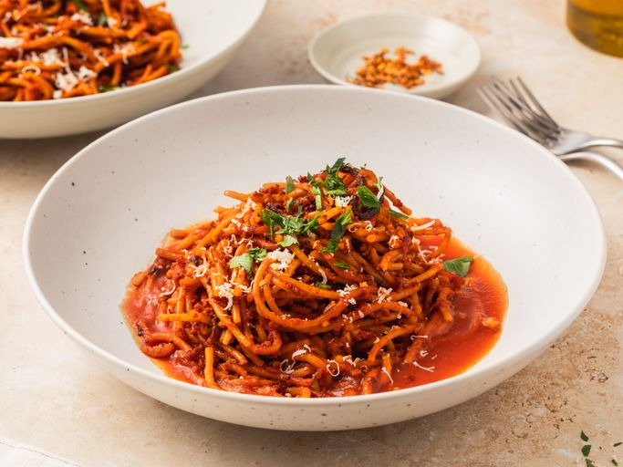

Spaghetti

Description
A flavorful spaghetti dish with a reduction of tomato broth brings out the sweetness of the tomato which balances well with the spiciness of the chili flakes. Let's learn the process of this unique technique.
Tomato Broth Ingredients
- 1 tablespoon olive oil
- 2 cloves garlic, minced
- 3 cups tomato puree
- 3 cups water
- 1 teaspoon salt, or to tatse
Assassin's Spaghetti
- ¼ cup olive oil
- 2 teaspoons red chili flakes, or to taste
- 6 ounces dry spaghetti
- Salt to taste
- 1 tablespoon finely chopped parsley, for garnish